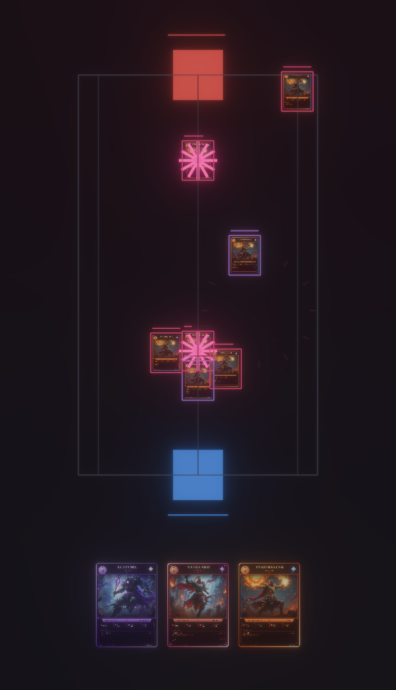
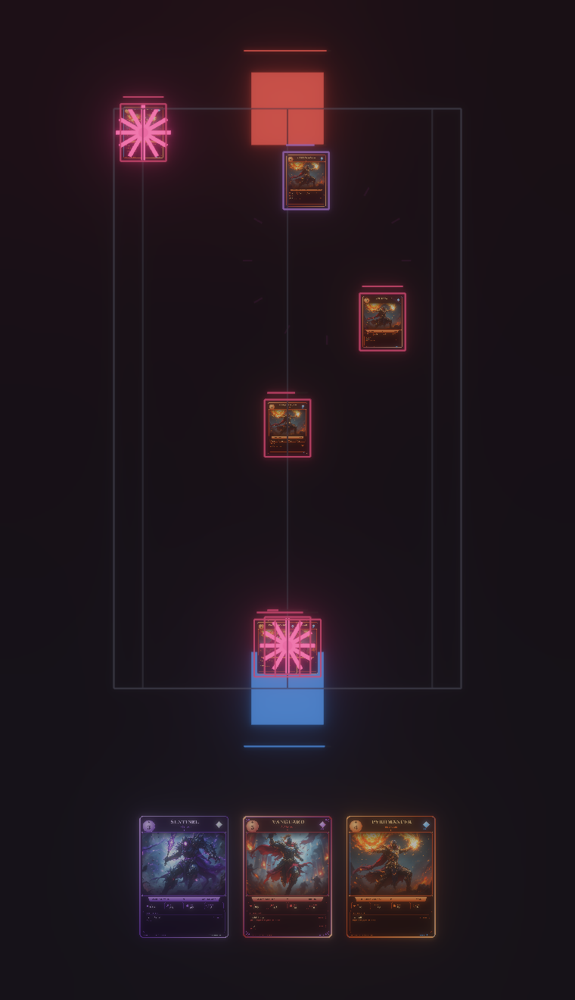

Client polish — real final-v2 champion faces on the board units, faction-tinted frames + HP bars, and stylized ability-cast VFX bursts (HDR + bloom). Rendered fully headless: an off-screen Bevy render-to-image camera, read back to PNG (no window, no screen capture).

